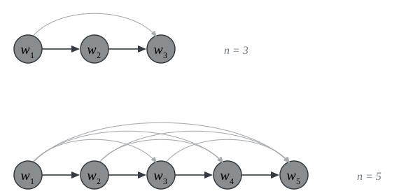
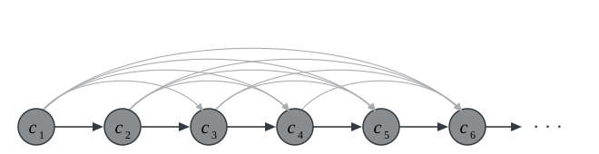
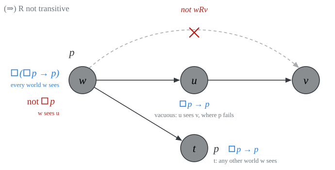
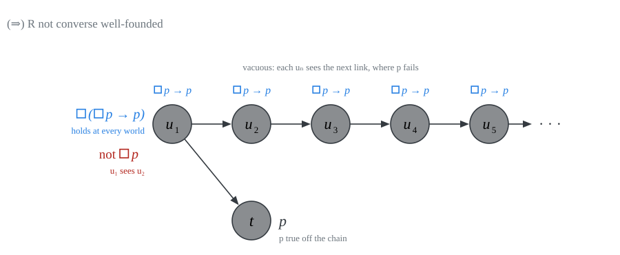
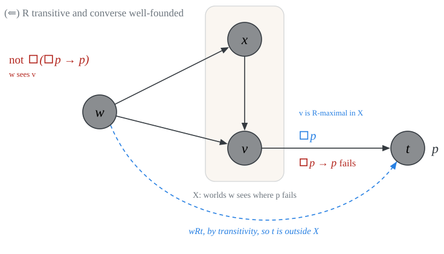

PHIL 452 · Modal Logic
What emerged from our discussion of frames is that different classes of frames are characterized by distinctive formulas of modal propositional logic.
A formula \(\varphi\) of \(\mathcal{L}^\Box\) modally defines a class of frames \(\mathcal{C}\) iff for all frames \((W, R)\),
\[\begin{array}{lll} (W, R) \models \varphi & \text{iff} & (W, R) \in \mathcal{C} \end{array}\]
\(\textsf{T}\) modally defines the class of reflexive frames
\(\textsf{B}\) modally defines the class of symmetric frames
\(\textsf{4}\) modally defines the class of transitive frames
\(\textsf{5}\) modally defines the class of euclidean frames
Let \(\mathcal{L}\) be a first-order language with a binary predicate \(R\) as part of the non-logical vocabulary.
A formula \(\varphi\) of first-order \(\mathcal{L}\) first-order defines a class of frames \(\mathcal{C}\) iff for all frames \((W, R)\),
\[\begin{array}{lll} (W, R) \models \varphi & \text{iff} & (W, R) \in \mathcal{C} \end{array}\]
\(\forall x Rxx\) first-order defines the class of reflexive frames
\(\forall x \forall y (Rxy \to Ryx)\) first-order defines the class of symmetric frames
\(\forall x \forall y \forall z (Rxy \wedge Ryz \to Rxz)\) first-order defines the class of transitive frames
\(\forall x \forall y \forall z (Rxy \wedge Rxz \to Ryz)\) first-order defines the class of euclidean frames
\(\forall x \forall y \ (Rxy \leftrightarrow x =y)\) first-order defines the class of identity frames
\(\forall x \forall y \ Rxy\) first-order defines the class of universal frames
Some negative results:
\(\forall x \ \neg Rxx\) first-order defines the class of irreflexive frames.
no formula of \(\mathcal{L}^\Box\) modally defines the class of irreflexive frames.
\(\forall x \forall y (Rxy \to \neg Ryx)\) first-order defines the class of asymmetric frames.
no formula of \(\mathcal{L}^\Box\) modally defines the class of asymmetric frames.
\(\forall x \forall y \forall z (Rxy \wedge Ryz \to \neg Rxz)\) first-order defines the class of intransitive frames.
no formula of \(\mathcal{L}^\Box\) modally defines the class of intransitive frames.
\(\forall x \forall y (Rxy \leftrightarrow x \neq y)\) first-order defines the class of difference frames.
no formula of \(\mathcal{L}^\Box\) modally defines the class of difference frames.
\(\forall x \ Rxx\) first-order defines the class of universal frames.
no formula of \(\mathcal{L}^\Box\) modally defines the class of universal frames.
Some negative results:
\(\Box (\Box p \to p) \to \Box p\) (Löb) modally defines the class of transitive converse well-founded frames.
no first-order formula defines the class of transitive converse well-founded frames.
\(\Box \Diamond p \to \Diamond \Box p\) (McKinsey) modally defines the class of unsplittable frames.
no first-order formula defines the class of unsplittable frames.
A coloring of a frame \((W, R)\) is a function \(c: W \to \{ \text{red}, \text{blue}\}\). \(R(u)\) is the set of \(R\)-successors of each member \(u \in W\), that is, \(R(u) = \{v \in W: Ruv\}\). Given a coloring \(c\) for a frame \((W, R)\), call a world \(u \in W\) split by \(c\) iff \(R(v)\) contains both a red world and a blue world.
Call a frame unsplittable iff no coloring splits every successor of every world. Given the McKinsey formula, if every world accessible from a given world \(u\) sees a red world, then some successor world of \(u\) sees only red.
\(\Box (\Box (p \to \Box p) \to p) \to p\) (Grzegorczyk) modally defines the class of partial orders with no infinite strictly ascending \(R\)-chains.
no first-order formula defines the class of partial orders with no infinite strictly ascending \(R\)-chains.
Proposition 1 No first-order formula \(\psi\) is true in all and only the transitive converse well-founded frames.
A relation \(R\) on a set \(W\) converse well-founded iff there are no infinite ascending \(R\)-chains of the form \(x_1Rx_2 \cdots x_nRx_{n+1} \cdots\).
This is a consequence of Compactness: if a set of first-order formulas \(\Gamma\) is finitely satisfiable, then \(\Gamma\) is satisfiable.
Proof. Suppose, for contradiction, that \(\psi\) is true in all and only the transitive converse well-founded frames.
Let \(\Sigma\) be a set of first-order formulas that require \(R\) to be transitive.
Add infinitely many new constants \(c_1, c_2, c_3, \dots , c_n, \dots\) and let \[ \Gamma_0 := \{Rc_ic_{i+1} : i \geq 1\}. \]
Claim. \(\Sigma \cup \Gamma_0 \cup \{\psi\}\) is finitely satisfiable.
Let \(\Delta\) be a finite subset of \(\Sigma \cup \Gamma_0 \cup \{\psi\}\).
Let \(n\) be the largest index of a \(c_i\) in \(\Delta\) (or \(1\) if there is none).
Let \(W = \{w_1, \dots, w_n\}\), let \(R\) be the transitive closure of a strict order \(w_1 R w_2 R \cdots R w_n\), and interpret \(c_i\) as \(w_i\).
\((W, R)\) is transitive and converse well-founded
By assumption, \((W, R) \models \psi\).
\((W, R)\) satisfies \(\Sigma\) and every \(Rc_ic_{i+1}\) in \(\Delta\).
So, \(\Delta\) is satisfiable.

By Compactness, \(\Sigma \cup \Gamma_0 \cup \{\psi\}\) has a model \((W, R)\):

\(R\) is transitive and \((W, R) \models \psi\).
\(c_1 R c_2 R c_3 R \dots\) is now an infinite ascending \(R\)-chain.
\((W, R)\) is not converse well-founded.
But \(\psi\) is true only in converse well-founded frames. Contradiction.
We conclude that the class of transitive converse well-founded frames is not first-order definable. \(\blacksquare\)
Proposition 2 For every frame \((W, R)\):
\[ (W, R) \models \Box(\Box p \to p) \to \Box p \quad\text{iff}\quad R \text{ is transitive and converse well-founded on } W. \]
Proof. Fix a frame \((W, R)\). We now proceed in two stages:
(\(\Rightarrow\)) We target the contrapositive.
If \(R\) is not transitive, or not converse well-founded, then we will find a valuation \(V\) and a world where Löb fails.
(\(\Leftarrow\)) If \(R\) is transitive and converse well-founded, then, given a valuation \(V\), we will argue that each world \(w \in W\) verifies Löb: if \(w\) falsifies \(\Box p\), then \(w\) falsifies \(\Box(\Box p \to p)\).
Suppose \(wRu\) and \(uRv\) but not \(wRv\). Let \(V(p) = W \setminus \{u, v\}\).
\(w \nVdash \Box p\), since \(wRu\) and \(u \notin V(p)\).
\(u \nVdash \Box p\), since \(uRv\) and \(v \notin V(p)\). So \(u \Vdash \Box p \to p\).
If \(wRt\), then \(t = u\) or \(t \in V(p)\) (as \(t \neq v\)). Either way, \(t \Vdash \Box p \to p\).
So \(w \Vdash \Box(\Box p \to p)\) but \(w \nVdash \Box p\).

Suppose \(u_1 R u_2 R u_3 R \cdots\) is an infinite ascending chain. Let \(V(p) = W \setminus \{u_1, u_2, \dots\}\).

Each \(u_n\) sees \(u_{n+1} \notin V(p)\), so \(u_n \nVdash \Box p\) and \(u_n \Vdash \Box p \to p\). All worlds off the chain satisfy \(p\). So \(\Box p \to p\) is true at all worlds.
Hence \(u_1 \Vdash \Box(\Box p \to p)\), but \(u_1 \nVdash \Box p\).
Fix \(V\) and \(w\), and suppose \(w \nVdash \Box p\). Let \[ X = \{u \in W : wRu \text{ and } u \notin V(p)\} \neq \varnothing. \]
Since \(R\) is converse well-founded, \(X\) has an \(R\)-maximal \(v\): no \(t \in X\) with \(vRt\).
\(v \nVdash p\), since \(v \in X\).
If \(vRt\), then \(wRt\) by transitivity, and \(t \notin X\), so \(t \Vdash p\). Thus \(v \Vdash \Box p\).
So \(v \nVdash \Box p \to p\). As \(wRv\), \(w \nVdash \Box(\Box p \to p)\). \(\blacksquare\)
